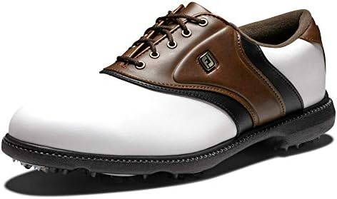
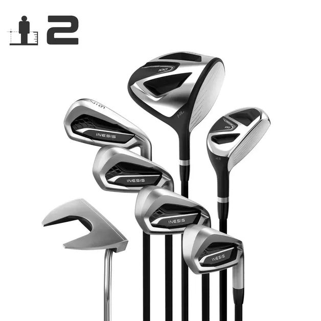

Epic Sports
Golfe
O golfe é um esporte elegante e desafiador que teve origens na Escócia no século XV. Com uma história rica e prestigiada, o golfe se destaca por sua ênfase na precisão e estratégia. Os jogadores, conhecidos como golfistas, utilizam tacos para acertar uma pequena bola no menor número possível de tacadas em direção a um buraco no campo. O esporte atraiu alguns dos atletas mais renomados, incluindo lendas como Jack Nicklaus, Tiger Woods e Arnold Palmer. Além disso, o golfe é palco de torneios de prestígio, como o Masters, o US Open e o Open Championship, que reúnem os melhores jogadores do mundo em desafios emocionantes. O golfe é um esporte que combina habilidade, concentração e apreço pela natureza, tornando-o uma experiência única para seus praticantes.
Visite https://pt.wikipedia.org/wiki/Golfe e https://terravistagolf.com.br/os-melhores-jogadores-de-golfe-da-atualidade/.

Bola de Golfe
Preço: R$200,00
Descrição: Uma bola de golfe de alta qualidade para melhorar o seu jogo.
Tamanhos disponíveis: Único

Bola de Golfe
Preço: R$210,00
Descrição: Bola de golfe premium para um desempenho excepcional.
Tamanhos disponíveis: Único

Tênis de Golfe
Preço: R$2.900,00
Descrição: Tênis de golfe de alta qualidade para o conforto durante o jogo.
Tamanhos disponíveis: 39, 40, 41, 42

Tênis de Golfe
Preço: R$3.800,00
Descrição: Tênis de golfe de alta qualidade para o conforto durante o jogo.
Tamanhos disponíveis: 37,38, 39, 40, 41, 42

Tênis de Golfe
Preço: R$1.300,00
Descrição: Tênis de golfe de alta qualidade para o conforto durante o jogo.
Tamanhos disponíveis: 35,36,38, 39, 40, 41, 42

Taco de Golfe
Preço: R$2.300,00
Descrição: Taco de golfe de alta qualidade para canhotos.
Tamanhos disponíveis: Único

Taco de Golfe
Preço: R$5.500,00
Descrição:Kit tacos de golfe de alta qualidade para destros.
Tamanhos disponíveis: Único

Taco de Golfe
Preço: R$2.300,00
Descrição:Taco de golfe de alta qualidade para destros.
Tamanhos disponíveis: Único